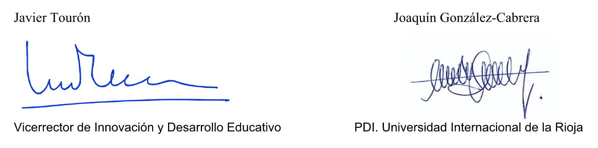

Debes entender que tu participación es totalmente voluntaria. Puedes retirarte del estudio cuando quieras, sin dar explicaciones y sin que esto tenga ningún tipo de repercusión. También tienes derecho a no contestar alguna/s pregunta/s en particular.
Todos los datos obtenidos en este estudio son anónimos (y no se recoge ningún dato de carácter personal), es más, ni siquiera se solicita un número de usuario o ID inventado por el participante. La información obtenida se utilizará exclusivamente para los fines específicos de este estudio y siempre de carácter científico.
No recibirás ningún incentivo económico ni en bienes por tu participación en el estudio. Además, tienes derecho a recibir una copia de este documento (para ello debes solicitarlo a joaquin.gonzalez@unir.net). En la misma dirección puedes consultar cualquier duda o cuestión que consideres necesaria para tu participación.
El grupo de investigación "Análisis y prevención del ciberacoso" (CB-OUT) de la Universidad Internacional de la Rioja (UNIR) presenta varias líneas de investigación centradas directamente en este problema y también en temas del comportamiento online y los usos problemáticos de Internet. Este grupo se caracteriza por un enfoque singular y diferente, de un problema complejo que ha sido (y sigue siendo) abordado por numerosos investigadores en el panorama nacional e internacional.
En relación directa sobre el ciberacoso cabe destacar la unión de metodologías de evaluación psicológica mediante auto-informe con marcadores bioquímicos (especialmente en la evaluación del estrés a través de la hormona del cortisol), así como trabajos con muestras poco exploradas (altas capacidades) y en contextos internacionales (Latinoamérica). Así pues las líneas de trabajo son:Está cada vez más aceptado que los videojuegos son un elemento cultural más en nuestra sociedad y que suponen también un sector económico en auge en numerosos entre nuestros adolescentes y jóvenes. En este escenario investigadores de la Universidad Internacional de la Rioja (UNIR) quieren conocer y profundizar en los usos más frecuentes de jugadores (habituales y esporádicos) de un género de videojuegos concreto: los MOBA- campo/estadio de batalla multijugador en línea-. Dentro de este género, encontramos como un buque insignia al afamado League of Legends (LOL) que cuenta, según cifras de Riot Games, con aproximadamente 8M de cuentas en todo el mundo.
El LOL es un éxito como videojuego, un éxito como modelo de negocio, y marco de referencia para otros productos del género MOBA. No obstante, poco conocemos aún sobre cómo este videojuego interacciona con el bienestar psicológico de los jugadores.
La presente investigación se centra en conocer los hábitos de consumo temporal de los jugadores de LOL, así como un conjunto de variables ciber-psicológicas que pretenden conocer cómo puede afectarnos el consumo de este videojuego (y de Internet en general) a nuestra calidad de vida.
Los cuestionarios utilizados en este estudio han sido publicados, sin excepción, en revistas o editoriales de prestigio nacional e internacional y presentan de adecuados indicadores de validez y fiabilidad.
El equipo investigador de UNIR
Estimados padres:
El motivo de la presente es doble, por una parte poneros al corriente del estudio que desde la Universidad Internacional de La Rioja (UNIR) hemos diseñado sobre el “Acoso y ciberacoso en la población de alumnos de Altas Capacidades” y, por otra, pedir vuestra colaboración en el mismo. Ya hemos entrado en contacto con muchas asociaciones que nos han manifestado su interés en esta iniciativa.
Respecto al estudio, se trata de una investigación científica rigurosamente planteada que se apoya en la fortaleza del grupo de investigación: "Análisis y prevención del ciberacoso", que ha venido dirigiendo el profesor Joaquín Gonzalez-Cabrera, del que os ofrecemos algunos resultados en la sección correspondiente de esta web. Por otra parte, añadimos el área de estudio sobre las Altas Capacidades y Desarrollo del Talento que vengo cultivando desde 1993 y que os es de sobra conocida. Una breve descripción está incluida en esta web también (pueden verse las publicaciones en http://www.javiertouron.es/p/javier-touron.html). Así mismo, forman parte del equipo investigador del proyecto profesores de la Universidad de Murcia (Dra. Prieto y Dra. Ferrando) y de la Universidad de Radbou -Holanda- (Dra. Hoogeven), todas ellas con un extenso y reconocido recorrido investigador en el área de las Altas Capacidades.
El problema del acoso, tanto el que se realiza dentro del contexto escolar como a través de las redes sociales, está adquiriendo una notoriedad y proporciones alarmantes en los centros educativos, pero poco o nada se ha investigado sobre el acoso específico a los alumnos más capaces que, como ya sabemos, son objeto de diversas dificultades en el entorno escolar.
Pensamos que este estudio nos puede ofrecer resultados relevantes y valiosos sobre un problema latente que precisa de intervención educativa, y que puede ayudar a visibilizar mejor la problemática general de este alumnado.
En esta web os ofrecemos detalles técnicos del estudio en el que nos gustaría que tomaseis parte, animando a vuestros asociados para que autoricen la participación anónima de sus hijos en la recogida de los datos que precisamos para llevar a cabo el estudio. Dicha recogida de datos se realizará mediante un cuestionario online que está dentro de la web que visitas. Esta investigación no tendrá coste alguno ni para las asociaciones ni para los alumnos (familias) que participen. Los datos generales serán devueltos a las asociaciones participantes a través de un informe particular y otro general del conjunto de la investigación.
Esta iniciativa cuenta con el refrendo del Comité ético de Investigación del Principiado de Asturias, donde ha sido evaluado el estudio consiguiendo el informe favorable (Ref. 41/17).
Para terminar, quisiéramos daros las gracias por participar en el proyecto y por vuestra preocupación por la mejora de la calidad de vida de vuestros hijos. Sin otro particular y en la confianza de que el estudio os resulte de interés, aprovechamos para enviaros un saludo cordial.